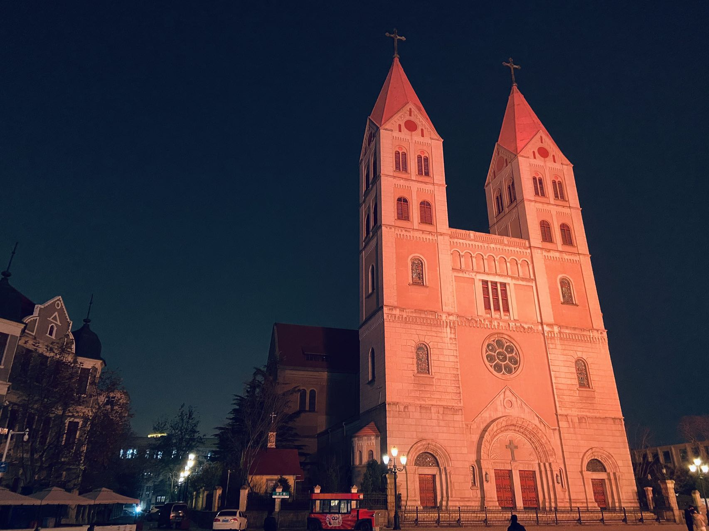
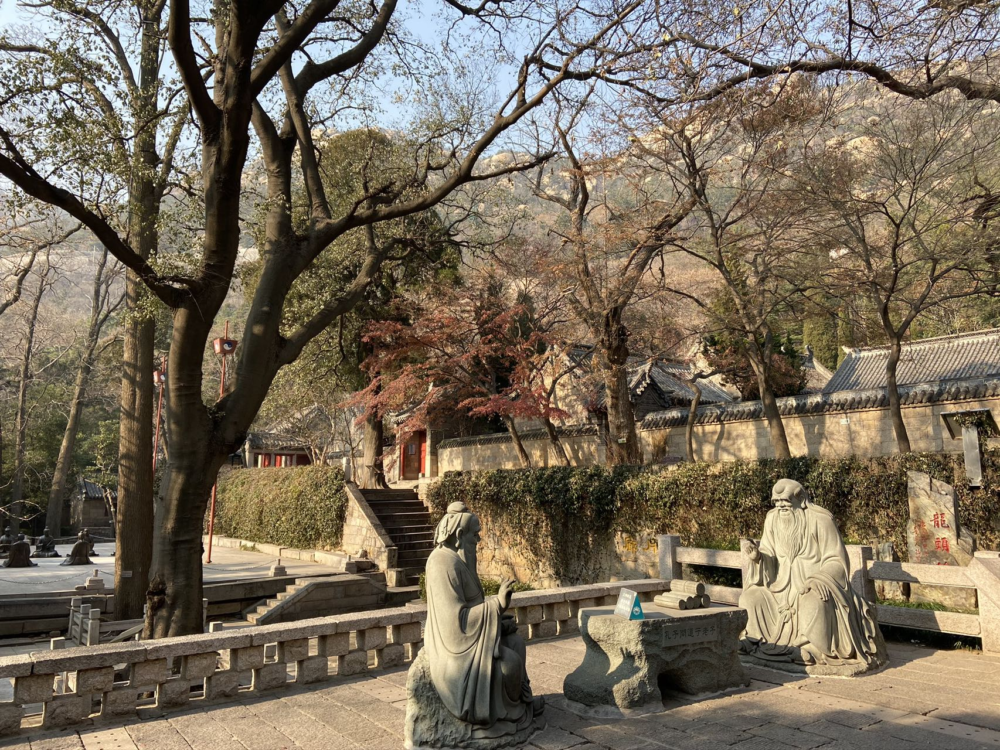
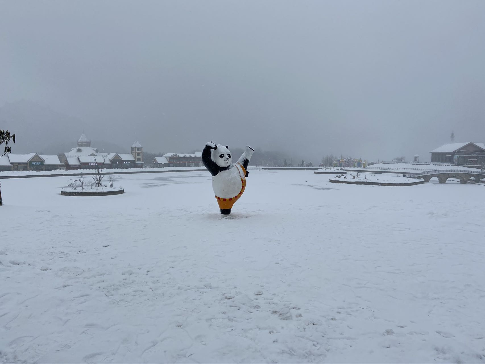

Although I am not a photographer, I still want to show you some photographs I have taken :
Trees and sunshine;wonderful newday

Unique church in Qingdao, China

Taosim culture; talk under the treesThe Old Summer Palace

Kong Fu Panda in snowLight of the setting sunCute squirrel stand in the branchThe Great wall high angle shot